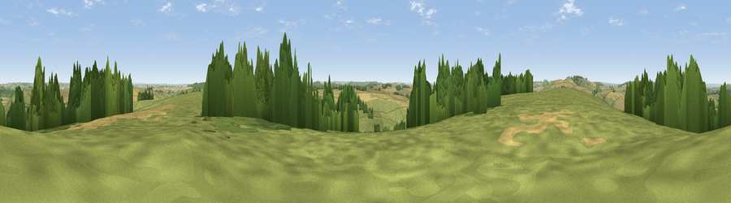

Viewpoint near Brixton Deverill
#18163 in England · top 27% of its area beats it · near Brixton DeverillThe view, rendered

A 360° render of this exact spot computed from the terrain model, tree cover and land cover — summer colours, afternoon light, calibrated against photographs of famous viewpoints. Real trees, hedges and buildings will differ in detail.
The panorama
Grey silhouette: terrain skyline in each direction (720 bearings, Earth curvature and refraction included). Dashed green: skyline with trees (+15 m) and buildings (+8 m) as obstacles. Blue strip: how far the ground is visible on each bearing.
Where the view opens
Wedge length = distance to the farthest visible ground on that bearing (vegetation-aware). Rings at 10, 25 and 50 km.
What fills the view
45% grassland · 40% cropland · 15% woodland
Angular shares of the visible panorama (visual magnitude), not map area. Landscape diversity 0.45 (0–1 Shannon).
Key numbers
More beautiful places nearby
The staircase of upgrades: each row has a higher view potential than everything closer. Driving times are estimates from straight-line distance, calibrated against real road routing — check an actual route before setting out.
| Place | Direction | Drive | Score |
|---|---|---|---|
| Viewpoint near Brixton Deverill | W · 1 km | ~3 min | 56.2 |
| Viewpoint near Monkton Deverill | W · 3 km | ~8 min | 70.9 |
| Cley Hill | NNW · 8 km | ~16 min | 76.8 |
| Viewpoint near Berwick St John | SSE · 18 km | ~31 min | 78.2 |
| Beacon Batch | WNW · 44 km | ~64 min | 79.4 |
| Bleadon Hill [Loxton Hill] | WNW · 55 km | ~76 min | 79.6 |
| Eggardon Hill | SW · 55 km | ~77 min | 80.3 |
| Viewpoint near Askerswell | SW · 55 km | ~77 min | 81.7 |
51.14046, -2.17541 · source: screening · position refined by local search. Computed location — check access rights before visiting.